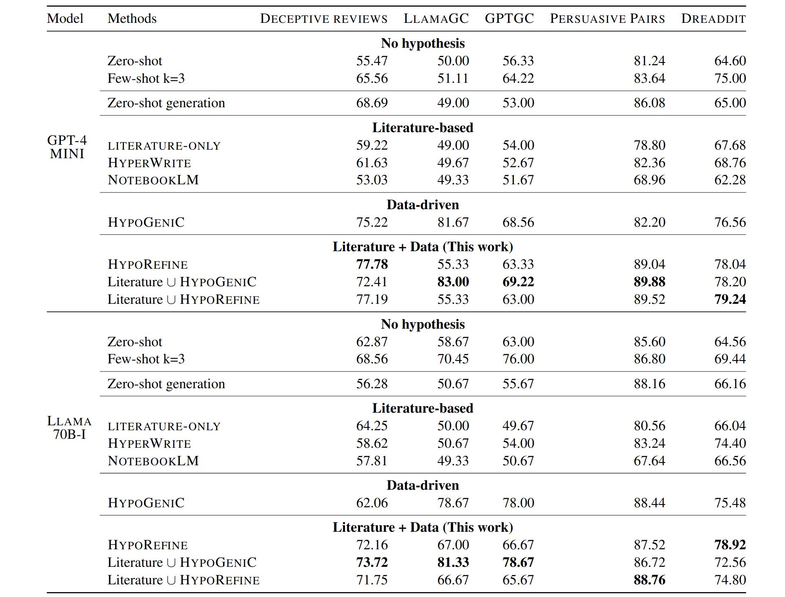

The results demonstrate the effectiveness of integrating literature-based and data-driven hypothesis generation methods.
Automatic Evaluation
Combining literature-based and data-driven methods produced the best performance across tasks. The integrated approach improved improvement of 11.92\% over few-shot methods and 16.54\% over literature-based methods for GPT, and 6.03\% over few-shot methods and 14.97\% over literature-based methods for Llama.
Our framework with literature + data showed significant advantages over zero-shot, few-shot, data-driven and literature-based methods, particularly in handling OOD datasets.

Accuracy scores on the held-out OOD datasets. Literature + Data outperforms all other methods in every
model and task configurations.
Human Evaluation
Generated hypotheses improved human decision-making in both Deception Detection and AIGC Detection. In AIGC Detection, accuracy increased by 14.19% (58.86% → 73.05%, p=0.01), and in Deception Detection, accuracy improved by 7.44% (57.14% → 64.58%, p=0.04). Participants used hypotheses in over 90% of decisions, with the most popular hypothesis used 44.55% of the time.
Participants rated 100% of the hypotheses as helpful, with over 40% finding them "Very helpful" or "Extremely helpful." Results from the novelty check study showed that 84% of hypotheses pairs in Deception Detection and 80% in AIGC Detection offered distinct insights, highlighting the strengths of combining literature-based and data-driven approaches.